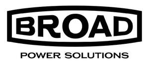
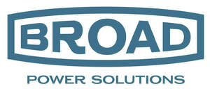

Trade Mark Journal No.2026/010 6 March 2026
UK00004342715 19 February 2026 (9)
Mark 1

Mark 2

- Class 9
- Electrical components; Electrical and electronic components; Electrical distributors; Electrical and electronic connectors; Electronic and electrical connectors; Electrical adapters; Electrical inverters; Electrical outlets; Electrical connectors; Electrical batteries; Electrical converters; Electrical cables; Electrical amplifiers; Electrical transformers; Electrical rectifiers; Electrical adaptors; Power distributors [electrical]; Electrical inductors; Electrical circuits; Electrical cords; Electrical ducts; Electrical cabling; Electrical coils; Electrical couplings; Electrical storage batteries; Electrical transformers for telecommunication apparatus; Electrical wires; Plug-in electrical connectors; Electrical telecommunications apparatus; Electrical sensors; USB chargers; USB adapters; USB cables; Anti-dust plugs for charger ports; Wireless battery chargers; Car charger; USB cables for cellphones; Battery chargers; USB hardware; USB chargers adapted for car cigarette lighter sockets; Electric-car charger; Smartphone battery chargers; USB hubs; Wireless chargers; Battery chargers for laptop computers; Chargers; Chargers for batteries; Electric battery chargers; Portable chargers; Solar battery chargers; Battery chargers for tablet computers; Solar-powered battery chargers; Mobile phone battery chargers; Battery adapters; Chargers for electric batteries; Electric adapter cables; Portable power chargers; Adapter plugs; Battery chargers for mobile phones; Electric plug adapters; Cell phone battery chargers for use in vehicles; Mains chargers; Mobile phone chargers; Chargers for cell phone; Battery charging equipment; Rechargeable batteries; Plug adaptors; Rechargeable electric batteries; Electric charging cables; Portable power supplies (rechargeable batteries); Chargers for smartphones; Battery charge devices; Cable adapters; Battery charging devices for motor vehicles; Connector sockets (Electric -); Fast chargers for mobile devices; Dustproof plugs for jacks of mobile phones; Chargers for mobile phones; Wireless charging pads for smartphones; Phone plugs; Batteries; Auxiliary battery packs; Power adapters for use in vehicle lighter sockets; Connection plugs (Electric -); Converters for electric plugs; Interface cables [electric]; Power adapters; Electrical cable; Connecting electrical cables; Electrical power adaptors; Electrical connector housings; Electrical conduits; Electrical sockets; Electrical fuses; Electrical switches; Electrical power outlet boxes; Electrical circuit components; Integrated electrical circuits; Electrical plugs; Electrical connection boxes; Electrical power distribution blocks; Electrical outlet plates; Distribution boxes for electrical power; Communication hubs; Electrical terminal boxes; Conduit for electric cables; Electrical distribution boxes; Stands for computer equipment; Mounting devices for monitors; Mounting brackets adapted for computer monitors; Swivelling stands adapted for computers; Stands adapted for laptops; Stands adapted for tablet computers; Computer cabling.
Broad Power Solutions Ltd